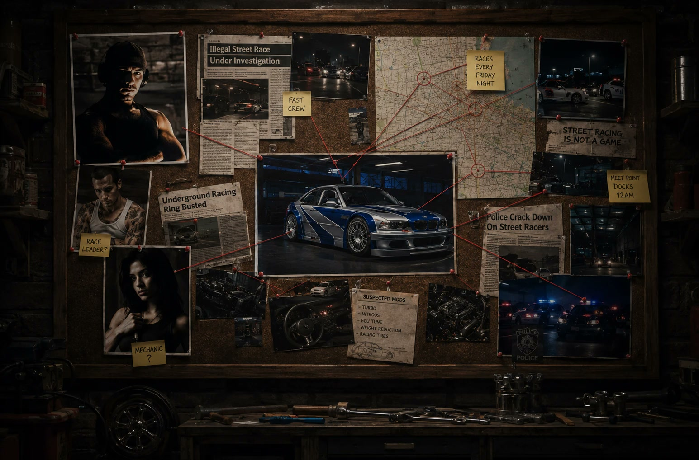
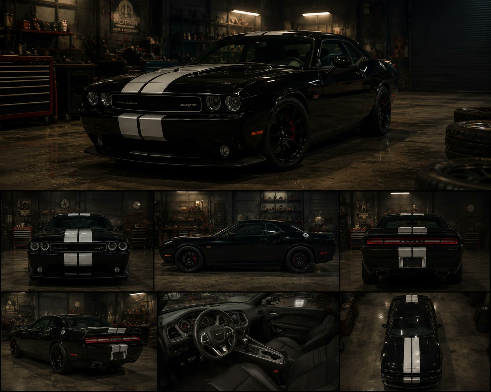
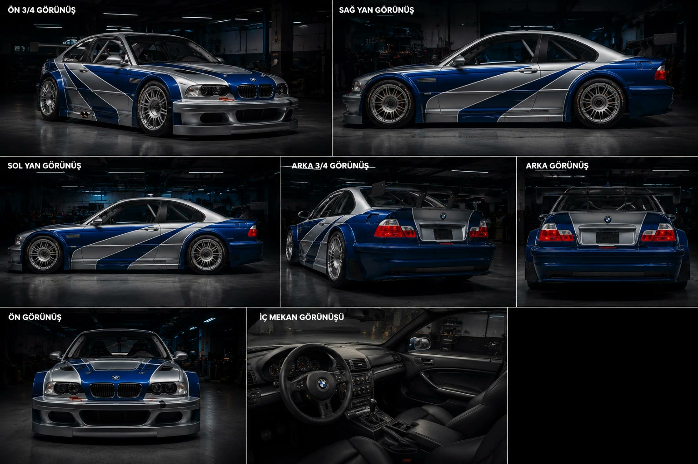

Dünya, araçlar ve ipuçları
Hikâyenin merkezindeki soruşturma panosu; karakter fotoğrafları, gazete kupürleri, harita ve “şüpheli modifikasyonlar” notlarıyla tek bir kare içinde kuruldu. Filmdeki iki araç ise her açıdan tutarlı kalması için çok açılı araç sayfalarıyla tasarlandı.


